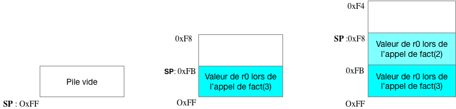

Sprint: Assembly Programming Basics
Task4 -- Gestion de la mémoire sous la forme d'une pile
Step2 -- La Solution
On peut définir deux instructions push:
empilement en mémoire, et pop:
dépilement.
Nous verrons par la suite que ces deux instructions sont des alias d'instructions que nous connaissons déjà.
On peut reécrire la fonction factorielle:
/*
* Factorial function: the argument n in r0
* Returns the computed result in r0
* Clobbers r0 and r1.
*/
.align 2
.global _fact
.type _fact,%function
.func _fact,_fact
_fact:
cmp r0, #1 // fact(1)=1
bne .L0 // so if r0==1
mov pc, lr // return 1
.L0:
push {r1} // save r1 in memory on the stack
move r1, r0 // save r0 in r1
sub r0,r0,#1 // compute (n-1)!
bl _fact // by recursively calling _fact
mul r0, r1, r0 // compute n*(n-1)!
pop {r1} //restore r1
mov pc,lr // return
.size _fact, .-_fact
.endfunc
Essayons ce code pour comprendre comment se passe l'empilement et le dépilement.
Créez un fichier source fact.s et intégrez-le dans le Makefile, comme nous l'avons déjà fait pour le sum.s. Compilez ce code et corrigez-le en définissant un point d'arrêt dans _fact.
Pour faire simple, on peut initialiser dans gdb le registre pc à l'étiquette _fact (sous entendu l'adresse) et même le registre r0 pour donner une valeur au paramètre de fact (on va calculer ici 3!).
Le registre sp
(Stack Pointer)
a une fonctionnalité très particulière, il va contenir à tout moment
le sommet de la pile. On l'intialise ici à 0xFF.
Vous devriez avoir à l'écran les instructions assembleur avec la
traduction des alias push et pop qui utilise le
registre sp.
L'empilement:
push {r1} ; (str r1, [sp, #-4]!)
On stocke la valeur de r1 à l'adresse qui est dans sp
à laquelle on a soustrait 4 (car un registre est sur 4 octets).
sp contenant l'adresse du
dernier élement empilé, on stocke ainsi r1 sur la pile.
Le point d'interrogation signifie que sp
est modifié et prend donc la valeur de sp-4
pendant cette instruction.
On peut traduire cette instruction par ces deux instructions:
sub sp, #-4
str r1, [sp]
Le dépilement:
pop {r1} ; (ldr r1, [sp], #4) Cette fois ci le dernier élement de la pile est dépilé dans r1. Le registre sp doit être ensuite incrémenté de 4 pour qu'il pointe sur l'élément précédemment empilé.
On peut traduire cette instruction par ces deux instructions:
ldr r1, [sp]
add sp, sp, #4
Maintenant faisons tourner le programme en pas à pas. On peut visualiser le contenu de sp à tout moment par :
Pour bien comprendre l'évolution de la pile, il faut regarder l'évolution de la mémoire avant l'adresse 0xFF avant et après les instructions pop et push.
Rappelez vous x /4xb 0xb visualise en hexadécimal les 4 octets se trouvant en mémoire à partir de l'adresse 0xfb.
On peut aussi regarder la valeur sur 4 octets se trouvant en 0xfb comme ceci:
Pour arriver à comprendre les empilements/dépilement successifs, exécutez en pas à pas la fonction fact et dessinez sur un papier les états successifs de la pile, c'est à dire les valeurs se trouvant en mémoire avant l'adresse 0xFF.

Prenez donc le temps qu'il faudra, mais ne baclez pas cette étape difficile.
Pour finir, il faut savoir qu'il est possible d'empiler/dépiler
plusieurs registres en une seule instruction. Par exemple pop
{r0, r1, r5}